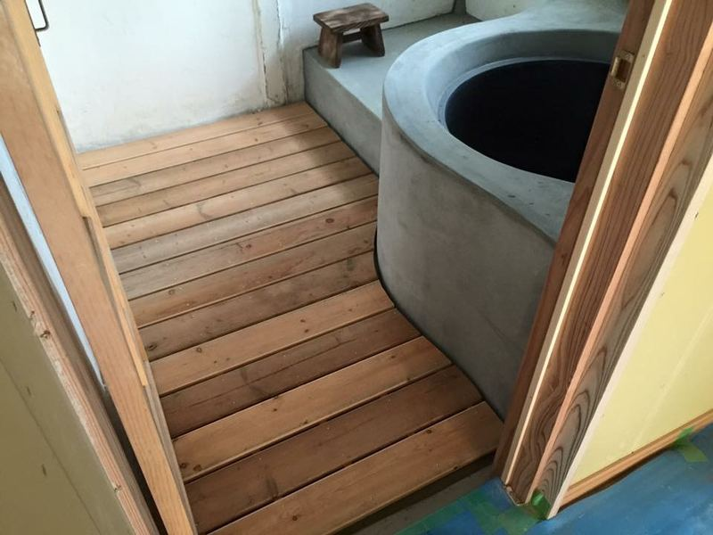
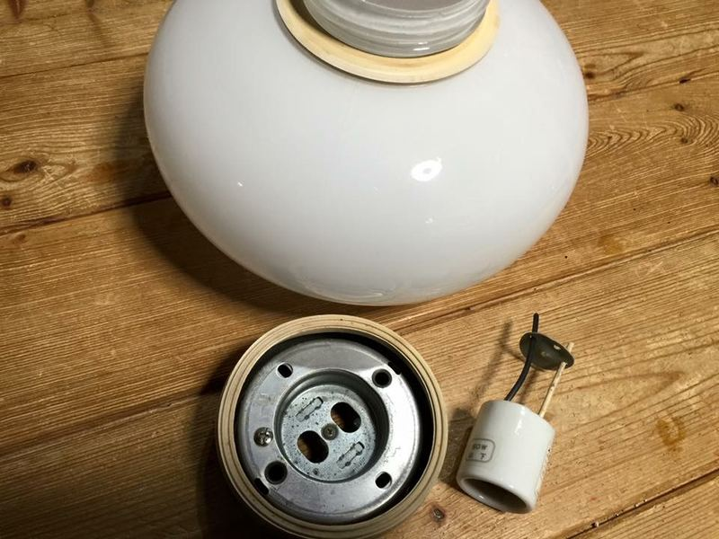
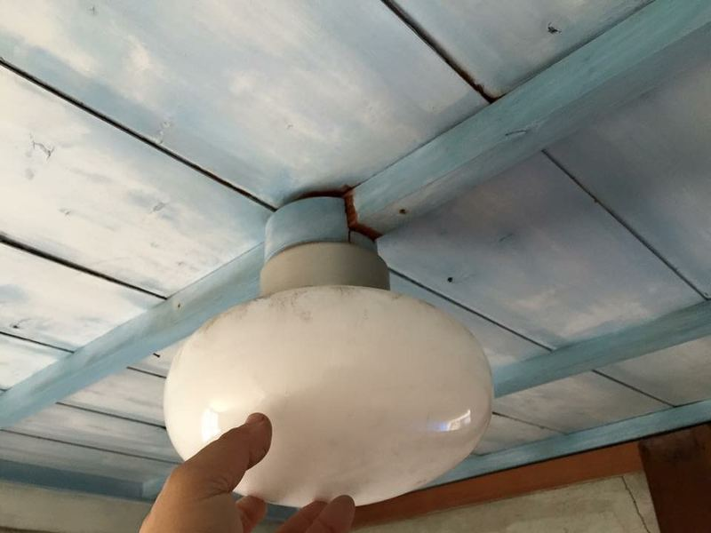
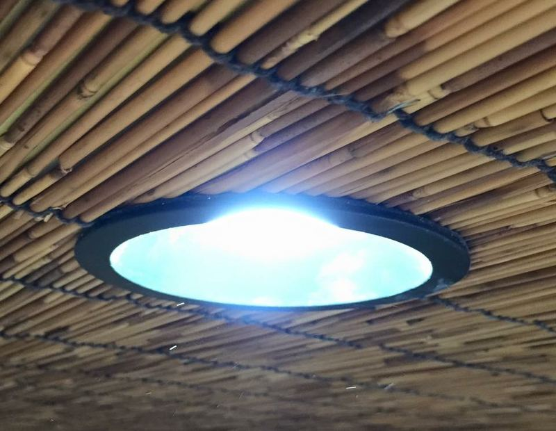
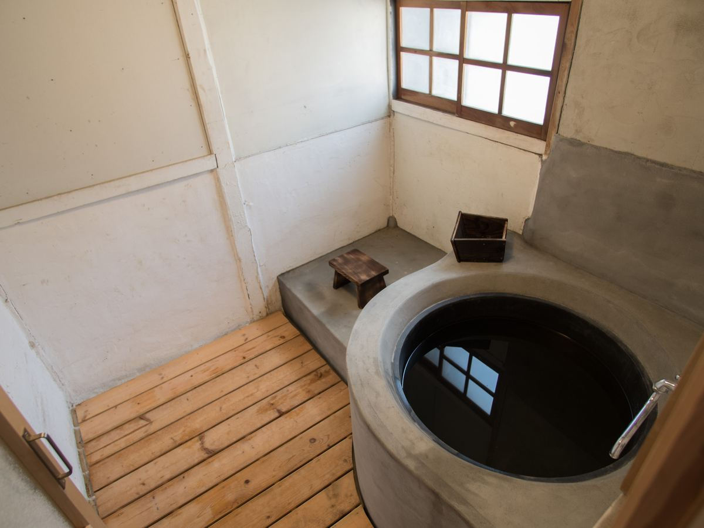

古民家再生の記録
2012年の「はじまり」から、井戸、五右衛門風呂、壁塗り、第二期改修まで。
汐見の家の再生は、｢ご縁わらしべ長者｣で進みました。
汐見の家はオーナーノブコのじいちゃんの実家です。母の旧姓が汐見。そのまま宿の名前になりました。
2012年4月、空き家になって久しいこの家の処分のため30年ぶりに佐島を訪れました。ところがしまなみ海道の美しさと汐見の家の佇まいに心打たれ、1年半迷った後、再生に舵を切り替えることにしたのです。それから1年かけて再生の手立てを探し、さらに1年半かけて第一期の改修を終え、開業を迎えたのが2016年4月でした。
遠距離、知識無し、お金無しの三重苦の中、さらに無い知恵を絞って手足と頭（もっぱら下げる）を動かして人様に助けて頂くしか方法がありませんでしたが、奇跡のような人の縁・時の運に恵まれ続け、まるで汐見の家が意思を持ってこの再生プロジェクトを動かしていて、私はその使い走りではと思うくらいでした。
支えて下さった皆さまへの感謝と、これから古民家を残したいと願う皆さまに少しでも参考になればと、リノベーションの記録を残すことにしました。時間は掛かりそうですが、順次掲載しますのでご覧下さい。
また、追々ですがSpecial Thanks Listを作成致します。軽重はとても付けられませんので、概ねリノベの話をし始めた順、掲載をご了解頂いた順とさせていただきます。
＜汐見の家再生＞
2012年4月 はじまり
2013年9月 ネットサーチで再生の糸口を見つける
2013年10月 古民家鑑定
2014年 9月～2015年 資金調達を模索する
2014年11月～2015年1月「 学生による古民家再生プロジェクト 」
2014年11月 長屋門修繕
2015年2～6月 井戸のリノベーション
2015年4月 床張り
2015年4月 開業前イベント「古民家ゲストハウス汐見の家、はじめます。」
2015年5月 古建具購入
2015年9月 壁塗り ワークショップ
2015年9月 庭のリノベーション
2015年9月 母屋とはなれのリノベーション
2015年12月 長屋門の屋根と瓦
2016年1月 五右衛門風呂のリノベーション（本体編）
2016年3月 五右衛門風呂のリノベーション（内装編）
内装・ 仕上げ
頂きもの① 食器・布団
頂きもの ② 水屋・格子戸
2016年4月 開業
2017年10月 コンポストバイオトイレ
2018年12月〜2019年1月 第二期リノベーション
はじまり
ありふれた空き家問題がはじまりでした。
2006年、引退後は汐見の家でのんびり暮らすつもりだった伯父が亡くなりました。
メンテナンスする人が居なくなった家は次第に傷み始め、2011年に島の方から長屋門の瓦が路地に落ちて危ないと母に連絡がありました。3人兄妹の遺された1人、78歳の母に汐見をどうするかが委ねられました。
母と私たち姉弟４人、誰にも汐見の家を維持する余力は無く、幸い近隣に倉庫として使おうかと言う方が現れたので、お譲りする話が進みました。
母方という事もあり、佐島を訪れることは稀でした。それでも皆、汐見の家が無くなるのはとても淋しかったので、最後に予定を合わせて家にお別れをしに行きました。
新潟、ロンドン、東京、福岡、それぞれの土地で暮らす家族の都合がピタリと合い、2012年4月、久方ぶりに佐島に集合しました。私自身にとっては30年振りの訪問でした。
花盛りのしまなみ海道の美しいこと。子供の頃は「五右衛門風呂がある古い家」くらいの印象だったのに、小さいながらも丁寧に守られた古民家の佇まいに打たれました。
芸術家の次姉は建物のあちこちの意匠に目を留め、素晴らしい素晴らしいと繰り返していました。
長姉が「やはり勿体ない。私が買う。」と言い出しましたが、仕事と家事育児で忙しい姉の生活を見ていた私は反対し、契約手続きを任せて貰うことにしました。
でも、東京に戻ってからも島と汐見の家の印象は忘れ難く、結局私の手も止まってしまったのです。


学生による古民家再生プロジェクト
汐見の家のリノベーションは、（一社）愛媛県古民家再生協会と河原アート・デザイン専門学校のコラボレーションによる「学生による古民家再生プロジェクト」の第二弾に採用して頂きました。
2014年11月の現地調査の後、学生さん達は6チームに分かれて再生プランを検討、2015年1月に同校でプレゼンテーションが行われました。
力の入ったプレゼンマテリアルに、模型まで用意してくれたチームもあり、5時間をかけてじっくりと説明して頂きました。


井戸のリノベーション
井戸があるなら使わなきゃ。井戸のリノベは松山市の 近松井戸工業所 様にお願いしました。
業者さん探しはネットで。幾つかの業者さんを比較してみて近松さんのブログを見つけ、お仕事振りが素敵だったのでＨＰから問合せたのが2015年2月半ば。翌週には汐見で落ち合い現地調査をして頂きました。

ビフォー
水の汲み出し方法は、①紐付きのバケツで手汲み（昔はそうしていたそうです。）②つるべ、③手押しポンプ、④電動ポンプ の４択です。
利便性を取るか、昔ながらに拘るか。決められなかったのでＦＢでアンケートを取りました。前年の11月に現地調査に来た河原デザイン・アート専門学校の先生も協力して下さり学生さん40人に聞いたところ、なんと一番人気はバケツ汲み。かなり迷いましたが実家で実際に井戸を使っている知人の｢手で汲む？無理無理！｣の一言で電動ポンプに決めました。
最近の井戸は事故防止、防犯の観点から蓋を固定してポンプで汲み上げる事が多いのですが、現地調査の時にベテランの職人さんから井戸の内側が石組みは今や貴重と教えて頂いたの隠すのがもったいない。井戸でスイカも冷やしたいし、手押しポンプはフォルムが綺麗。という我がままで結局全部盛りの井戸になりました。やり過ぎですね。
近松さんに相談したところ、井戸の横にアンティーク煉瓦の固定台を増設し、そこに手押しポンプを設置する解決策をご提案頂きました。いい感じです！

2015年4月25日 基礎工事、井戸洗浄、水量調査。マリンさんに立ち会って貰いました。


母に報告したら｢あら～普通に飲んでいたわよ。｣と言われましたが、20年ほど前の高潮であちこちの井戸に海水が入ったらしく、その影響かもしれません。使っている内に飲用適合にならないか、毎年の検査を楽しみにしています。


完成！ ポンプの目隠し、竹の井戸蓋、ポンプの口の竹筒はボランティアの方に、排水枠は左官の岩上さんに作って頂きました。
意味なく水を出し続けるゲストさん多し。楽しいです。
壁塗りワークショップ


庭のリノベーション
曽祖父が亡くなって４０年、引退したら佐島に住むつもりで家をメンテしていた伯父が亡くなって６年、庭はすっかり荒れ果てていました。


ロンドンで庭やランドスケープの仕事をしている 姉 に設計と施工管理を頼みました。
コンセプトは「佐島の里山」。姉はこれにロバート汐見へのリスペクトとして「和と洋の融和」を加えました。
2015年9月。庭をほぼ更地に。地面を慣らしている温さん。位置替えをする草木はポットに入れて退避。
棕櫚は伐採されましたが、一部は弓削の方に貰われて行き、切った茎は後に再利用されました。

姉の一時帰国に合わせた突貫工事です。
施行は因島の柳屋農園さん、柳屋さんの紹介で岡山の渡辺農園さんの樹園に木を選びに行きました。
シンボルツリーのヒサカキ、カエデ、サルスベリ、ミツバツツジ、ヤブツバキ、キンメイチク、その他諸々、山採りの素朴で力のある樹木を選びました。姉にはとにかくお金を掛けないでと頼んだので、デザインは大まかに留め、あとは樹木との出会い、最期は現場でアドリブです。
渡辺さんは地域おこしにも活躍されていて、汐見の活動に共感して下さり、予算が無く購入する予定のなかった庭石を安価で譲ってくれました。

汐見は車が入れない路地の奥なので、小型のヨイトマケのような器具が使われました。

奥に竹が入りました。ばっさり剪定されたカイヅカイブキは時間を掛けて整えます。


しまなみ海道によく見られるミツバツツジが咲きました。コデマリももうすぐ。

季節ごとに豊かに表情を変える庭になりました。
ご協力頂いた皆さま、ありがとうございました！
長屋門の屋根と瓦
長屋門は１／３が波板になっていました。
佐島の宮ノ浦（みやんな）付近に焼き物には適した土があり、蛸壺作りから転身した瓦屋さんがいたため、弓削や佐島には比較的早い頃から瓦屋根が普及したそうです。瓦屋さんも先代で辞められましたが、今でも島のあちこちで佐島産の瓦が使われています。

汐見の長屋門も、出来れば島の古瓦で再生出来ないかと伝手を探していました。
ある日、友人と弓削島を歩いていたところ、空き家の前に大量の古瓦が！

長屋門の修繕は、弓削のベテラン左官の岩上さんと大工の地元さんにお願いしました。


また一つ家が甦りました。
ご協力頂いた皆さま、有難うございました。
古建具の追加購入
リノベ案が固まり、古建具を買い足すことになりました。
武知さんが懇意にしている京都の古建具専門店に集合し、大小十数枚の建具を選びました。
2階建ての倉庫にみっちり詰め込まれた古建具に圧倒されます。素敵な格子の板戸や簀戸にどうやって選ぶのか見当も付きませんでしたが、武知さんと建具屋さんとで手際よく選び出し、3-4時間で完了しました。
購入した建具はマリンさんがレンタカーで島へ。武知さんは他の施主さんの用で神戸へ。私は東京へ。それぞれの帰途に着きました。
日本の何処かから京都経由で汐見にやって来た建具たち。どこに収まっているか、見つけて下さいね。


五右衛門風呂（本体編）
記憶にあるシンプルな五右衛門風呂にして貰いました。
汐見の家の五右衛門風呂に入ったのは3歳の時と高校の時の2回だけ。3歳の時は風呂釜の壁に体が触ったら死ぬと思ってめちゃくちゃ怖かった覚えがあります（笑）
左官仕事は弓削島の岩上勝美さんにお願いしました。島の五右衛門風呂を長年手掛けて来た方です。ぶっきらぼうな広島弁が最初は少し怖かったのですが、話す毎に人柄の温かさが判り、電話でお話させて頂くのがとても楽しみになりました。
｢1月までにしとくけん｣→工事の日程調整で。
｢そがなことようやらん｣→工事の様子を写メで送ってと頼みました。
｢わしは仕事しただけじゃけん｣→お礼も兼ねてFBやHPに載せたいと頼みました。
釜は排水口が錆びて直せず買い替えました。天保2年創業の広島市の 大和重工株式会社 様は、たたらの技術を受け継ぐ鋳造メーカーで、五右衛門風呂の釜を製造しています。
煙突の煤は葉の付いたままの青竹をブラシのように使って掃除します。今でも佐島には現役の五右衛門風呂が2-3軒あるので、やり方を教えて頂きました。
給水は、昔と同じように井戸からバケツで汲む案もありましたが、現代人には無理そうなのと、元々土間だったところを脱衣所にしたので止めて蛇口を引きました。井戸水だけにしたかったのですが、水質検査の結果が飲用不適合だったので、上がり湯として上水も引くことになりました。


大工さんが古い扉のすりガラスを使って作り直してくれました。腕の良さが判ります。


焚き口。火を見ていると飽きません。焼き芋や干物、マシュマロを焼くのも楽しみです。


ビフォー。2013年10月5日撮影。今と大して変わりませんね。
五右衛門風呂（内装編）
五右衛門風呂の内装は、ボランティアの方が手掛けました。
資金的に簡易宿所の認可を取るギリギリのところまで修繕するのがやっとだったので、スノコや脱衣籠はホームセンターで調達するつもりでした。ところが、汐見のリノベーションをずっと見守っていた方が名乗りを上げ、驚くような仕上げをして下さいました。こんな展開は想像もしていませんでした。
風呂蓋、スノコ、風呂椅子、アルマイトの洗面盥の裏には般若心経、内側には汐見のロゴ、脱衣所の天井、壁の漆喰塗り、壁のアクセントに再利用した格子戸、古いざるを再利用した脱衣籠。感謝の言葉もありません。

フローリングの素材で作って頂きました。釜の曲線に沿った凝った作りに感激です。







完成！
内装・仕上げ


大工仕事、壁塗りワークショップの後は、営業しながらゆっくり進めるしかないと思っていました。
そこに救世主が・・！DIYの達人、Kさんが手弁当で次々と残りの漆喰塗りを仕上げ、内装を加え、最後は外壁まで磨き上げてくれました。感謝しかありません。
頂きもの① 食器・布団
汐見は頂きものの多い宿です。
食器、布団、水屋、タオル類、テーブル、薪や海山の幸まで。
開業前も開業後も、たくさんの方から助けて頂き、心を寄せて頂いています。
ひとつひとつに人との会話があり、感謝のやりとりがありました。
１．食器
佐島を訪れて、汐見の処分に迷い始めた頃から、ノブコは唯一行きつけのワインバーでときどき愚痴をこぼしていました。
「大事にしてくれる人になら譲りたいんだけど。マスター、古民家買わない？」
無茶ぶりも良いところです。
話が二転三転し、自分でリノベに踏み出し、島通いが始まり、資金調達はじめ色々な事で悩んだことも、何かとぐちぐち聞いて貰っていました。
そして漸く開業が見えて来て、食器やリネンなどの調達を考え始めた時に、さらりとマスターから言われました。
「昔、レストランをしていた頃の食器を捨てられずに取ってあるから、全部持って行ってよ。」
言葉もありません。

2．お布団
綿布団が懐かしい、と言われます。
汐見の敷・掛布団はだいたい頂きものか、その打ち直しです。
お盆や正月に可愛い孫や子供を迎えるためにたくさん置いてあったお布団を、少しずつ手放すおうちがあり、有難く使わせて頂いています。
嫁入り道具のようなお目出たい柄もあり、瀬戸の花嫁だったのかも～と想像が膨らみます。
晴れれば毎日庭で干すお布団は、お日様の匂いがします。
ご紹介したいものは他にも沢山あり、割愛させて頂くのが恐縮です。
いつもいつも、本当に有難うございます。
【追記】
冒頭の食器が2017年4月にNHK「鶴瓶の家族に乾杯」で放映された時に写り込み、マスターとママに喜んで頂きました。

頂きもの② 水屋・格子戸
2015年の暮れに古い水屋（食器棚）と格子戸を頂きました。
急遽、食器棚を調達しないといけない事になり困っていたら、佐島のお母さんから「もう20年も空いとる親戚の家に古い食器棚があったと思うけぇ使えるなら使うてええよ。」と言って頂き、早速見に行ったところ、これが素晴らしい水屋でした。
大晦日なのに友人に来て貰ってワゴンで汐見の家のキッチンに運び入れると、流しと洗面台スペースの間に誂えた様に収まりびっくり。お正月前にすごいお年玉を頂きました。
その時に見かけた素敵な格子戸も後日頂きました。シロアリが来ていたので、友人が格子部分を切り出し修繕してキッチンの窓と五右衛門風呂の脱衣所に取り付けてくれました。お洒落です！
眠っていた貴重な家具・建具が汐見で蘇りました。今回もご縁に感謝です。
【2019.1追記】
後日、この家では友人が「古いものレスキュー」のプチイベントを開いてくれました。
また、この家も日系移民ゆかりの家と判り、屋根裏から立派なトロンコ(旅行用の大型トランク)が見つかりました。今は汐見の長屋門に収まっています。


塗料もこだわり。
コンポストバイオトイレ
汐見の離れにある昔ながらの汲み取り便所。植物共生細菌、いわゆるエンドファイトの｢土耕菌ナルナル｣を利用したコンポストバイオトイレにリノベしました。ほぼ無臭・ローコスト・ローメンテです。

非水洗洋便器。便槽の穴が大きい！
土耕菌ナルナルは千葉県市原市の土壌菌農法研究者、石井一行さんが発見・製品化した微生物農業資材で、13年の実績があります。
土と作物が元気になるため無肥料・無農薬栽培の強い味方です。千葉県立大網高校の実証栽培では目覚しい結果が出ており、同校は今月25、26日に岡山で開催される日本学校農業クラブ全国大会に出場することになりました。
一昨年、石井さんの会社を訪問した際に大網高校も見学させて頂きましたが、ナルナル菌で育てられた無農薬マスクメロンのまろやかな味は感動的でした。一切農薬・消毒薬を使わないで育てると、メロン独特のピリっとした刺激味がなくなるのですね。
分解力が強いので、トイレに使うと臭いが立たず嵩も増えません。古民家の便槽の大きさならば何年も汲み取りが要らないそうです。汲み取ればとても良い堆肥になります。
使い方は簡単。用を足したあと、備え付けのコップで籾殻を2－3杯便器の中に振りかけるだけです。
ちょっと弱点があります。風邪などで抗生剤を飲んでいる方が使うと、菌が死んで分解しなくなってしまいます。なので、風邪っぴきさんは母屋の水洗トイレをお使い下さい。
また、お尻のポケットからスマホやお財布を落とすとちょっと拾えないので気を付けて下さいね。（臭くないので虫捕り網で探せるかもしれませんが。）


水洗トイレに慣れた身に汲み取り式は最初落ち着きませんが、慣れてくると用を足すごとに大量の上水*を使う水洗トイレが逆に乱暴に思えて来るから不思議です。
ナルナル菌については こちら から！
*上水：瀬戸内気候の上島町は昔から旱魃に悩まされました。今は広島県三原市からの海底パイプライン「友愛の水」で何の心配もなく上水が使えます。上下水道は都道府県管轄なので、県境を越えるのは大変なご苦労があったそうです。
第二期リノベーション
10年先かと思われた第二期リノベーション、西日本豪雨被害地域を対象にした助成金を頂き、開業3年目で実施する事が出来ました。感謝！
垂木が弱って、いつ瓦が落ちるか心配だった長屋門の屋根。瓦を取るとこんなに下がっていました！

ビシッと美しくなりました。アルミサッシも第一期リノベで使わず浮いていた格子戸に取り替え。


今回も弓削の空き家から貴重な古瓦を頂きました。手間の掛かる作業をして頂き有難うございます


中には木炭蓄電器。小さいソーラーパネルと合わせて暖色LEDを路地と庭灯を点します。


島の空き家も日系移民ゆかりの家と判明！穴の開いた屋根裏からトロンコ(大きな旅行用トランク)をレスキューして長屋門に

仕切り方によっては窓のない個室になる母屋の天窓の間に小窓を追加。夏も北から涼しい風が！


多分昭和50年頃にリノベした掘り炬燵の間。壁紙や天井に雨漏りシミが目立っていたのですが、漆喰が塗れないので張り替え。古民家のリノベはつくづく一歩一歩です。
木炭蓄電器「TANDEN」
太陽光パネル＋LED照明＋木炭蓄電器「TANDEN」です。
蓄電池といえば鉛やリチウムが定番。木炭とは？？
暮らしの半分を地元で賄えたら安心だし面白いと思って、汐見はささやかな試みを進めています。井戸、五右衛門風呂、コンポストバイオトイレ。(ちなみに食材は余裕でクリアしています)
電気は有機薄膜太陽光発電と蓄電の技術が進むのを待つつもりでしたが、去年の断水を機に出来る事をしようと思いました。
そうこうして出会ったのが松江高専発の産官学共同プロジェクト、木炭蓄電器「TANDEN」です。
里山で炭を焼いて作り、畑に返せる蓄電池。地球の裏側の鉱山ではなく、汐見の裏山で賄えるかもしれません。エレガントではありませんか。
普段はこの通り
蓄電器は気軽に見られるように長屋門に置きました。日没と共に小さな灯りがともりますので、ご宿泊でなくともお気軽にご覧下さい。

TANDENを 汐見の長屋門 に運び込んだところ。
TANDENの詳細は こちら から。汐見にもリーフレットを置いております。
ご協力下さった皆さま、本当に有難うございました。活用はこれからなので、今後ともどうぞよろしくお願い致します。

里山照らし隊の皆さま、ありがとうございました！
西村 暢子拝
Special Thanks to:
松江工業高等専門学校 名誉教授 高橋信雄様
〃 〃 教授 福間眞澄様
里山照らし隊 隊長 影山邦人様、昇子様
〃 工場長 須山光雄様
弓削商船高等専門学校 助教 森耕太郎様
上島町商工会弓削生名支所 経営指導員 中林宏徳様
左官 岩上勝美様
ナカサカ電機 社長 中坂富雄様
村上工務店 村上潤様
泊まりに来ませんか
この家に泊まってみませんか。